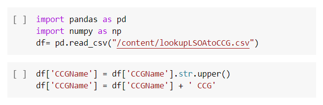

NHS waiting lists have long been a politically salient topic. In the Summer, an analysis published by the IFS found that more than 13 million patients may be awaiting treatment by July 2022 .
The aim of my project is to investigate the relationship between deprivation and the pandemics effect on NHS waiting lists.
When the pandemic hit, a lot of planned elective care had to be postponed in order to deal with the pressures of coronavirus. This led to a sharp fall in completed pathways as shown by figure 1. In 2020, compared with 2019, over 4 million fewer elective treatment pathways were completed.
Additionally, as shown by figure 2, there was a sharp fall in the number of people starting new treatment pathways. In 2020, compared with 2019, almost 6 million fewer new pathways were started. This can be thought of as the ‘missing patients’ who represents a big challenge in tackling the backlog caused by the pandemic. If these ‘missing patients’ were now returning and seeking care, we would expect the number of new waiting list pathways to be substantially above 2019. This is not the case.
Figure 3 shows the percentage decrease in completed pathways from April 2019 to April 2020. You can group CCGs by their deprivation quintile.
1 represents least deprived CCGs and 5 represents the most deprived.
Figure 4 shows that, on average, the more deprived a location is, the larger decrease in completed pathways.
Figure 5 looks at the relationship between deprivation quintile (explanatory variable) and percentage change in completed pathways from April 2019 and April 2020 (dependent variable).
The regression result shows this relationship is statistically significant at a 5% level. The result suggests that each further increase in deprivation quintile corresponds to a 4.523 percentage point fall in completed pathways.
The data analysed was drawn from two separate sources.
When creating my cleaned data set, I had to drop 29 CCGs (out of 106) from the analysis either due to missing data or changes in CCGs’ geographics over the reference period, leaving a sample of 77. The sample is skewed towards non-London CCGs.
The waiting time data is from NHS consultant-led referral to treatment waiting times data . Due to the repetitive nature of the website, I used loops in Python to obtain the data for each month and measure. I then joined the data used pandas DataFrame with a for-loop in order to clean the data.
The deprivation data is from the Ministry of Housing Communities and Local Government’s English indices of multiple deprivation API . The measure of deprivation takes account of income, employment, education, skills and training, among other factors. I created the CCG level deprivation data by merging the LSOA level deprivation data with an LSOA-to-CCG lookup. I then used this to create deprivation quintiles (using pctile command in stata).
By combing these two data sets I created, I was able to look at the waiting list stats by deprivation quintile. The merging of these data set threw up some challenges because ++
On average, waiting lists have increased by more than half (58%) in the most deprived areas, compared to around a third (38%) in the least deprived areas. The national average was 42%